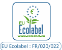

<footer>
  <!-- Partie haute (fond vert) -->
  <div class="footer-top">
    <div class="footer-top">

  <div class="footer-trust-bar page-container">

    <div class="trust-item">
      
      <h4>Fabrication française</h4>
      <p>Produits conçus et fabriqués en Île-de-France</p>
    </div>

    <div class="trust-item">
      
      <h4>Écolabel européen</h4>
      <p>Des formules respectueuses de l'environnement</p>
    </div>

    <div class="trust-item">
      <span class="trust-icon">🏆</span>
      <h4>40 ans d'expertise</h4>
      <p>Depuis 1982 au service des professionnels</p>
    </div>

    <div class="trust-item">
      <span class="trust-icon">⚡</span>
      <h4>Réactivité</h4>
      <p>Conseil et accompagnement personnalisés</p>
    </div>

  </div>

</div>

<div class="footer-main">

  <div class="page-container footer-grid">

    <div class="footer-column">

      

      <p class="footer-description">
        Activert conçoit et fabrique des produits
        d'entretien professionnels écologiques
        depuis plus de 40 ans.
      </p>

    </div>

    <div class="footer-column">

      <h3>A propos d'Activert</h3>

      <a href="societe.html">Qui sommes-nous ?</a>
      <a href="clients.html">Nos clients</a>
      <a href="contact.html">Contacter Activert</a>
      <a href="mentions-legales.html">Plus d'informations</a>

    </div>

    <div class="footer-column">

      <h3>Produits</h3>

      <a href="produits.html">Tous les produits</a>

      <a href="produits.html?category=1">Surfaces & Bureaux</a>
      <a href="produits.html?category=2">Sols</a>
      <a href="produits.html?category=3">Sanitaires</a>
      <a href="produits.html?category=4">Industrie & Transport</a>
      <a href="produits.html?category=5">Traitement des sols</a>
      <a href="produits.html?category=6">Restauration</a>


    </div>

    <div class="footer-column">

      <h3>Développement durable</h3>

      <a href="developpement.html">Nos engagements</a>
      <a href="cycle-de-vie.html">Cycle de vie</a>
      <a href="matieres-premieres.html">Matières premières</a>
      <a href="nettoyage-efficace.html">Nettoyage efficace</a>

    </div>

  </div>

</div>

  <!-- Partie basse (fond blanc) -->
  <div class="footer-bottom">
    <div class="page-container">
      <div class="footer-link-section">
        <a>Crédits photos ©Thinkstock pour l’Agence Tempo</a>
      </div>
      <div class="footer-link-section">
        <a href="mentions-legales.html">Mentions légales</a>
      </div>
      <div class="footer-link-section">
        <a href="#">Plan du site</a>
      </div>
    </div>
  </div>
</footer>